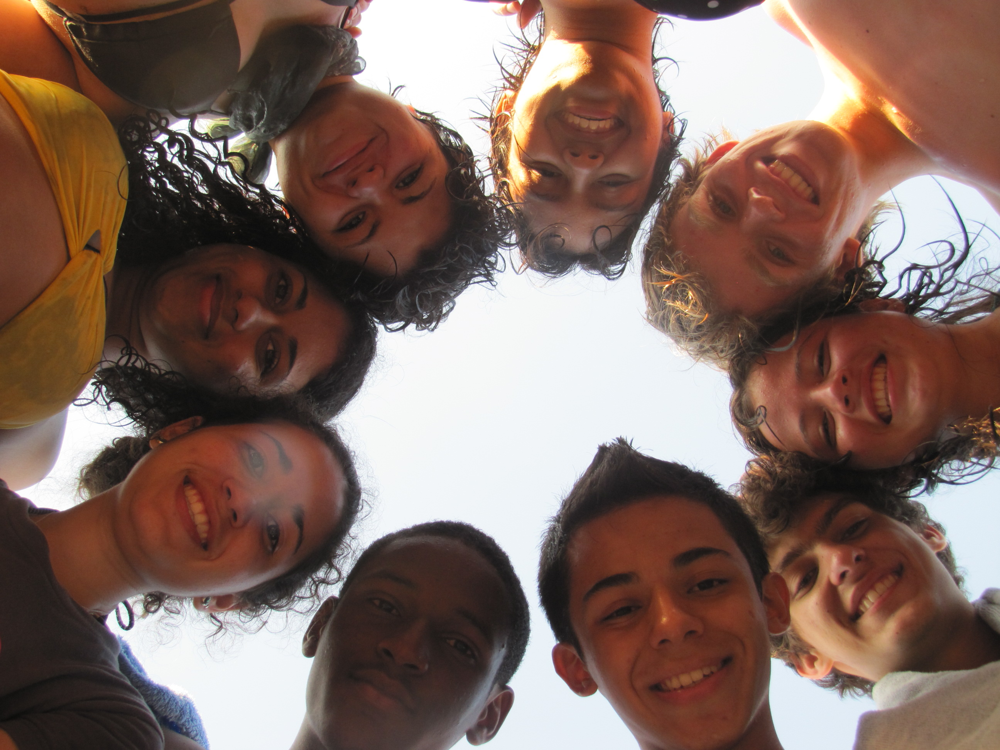
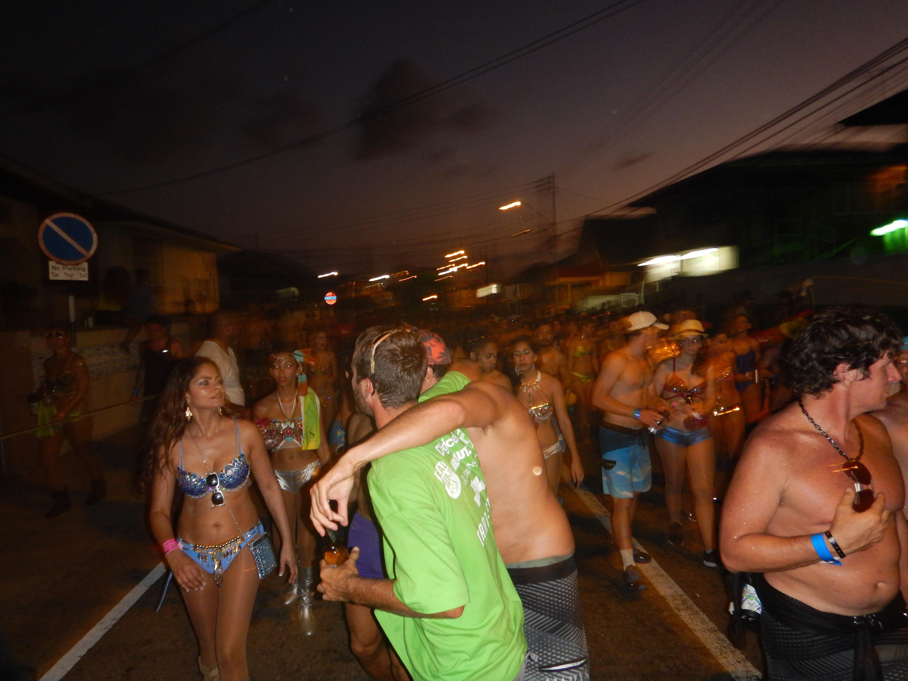

The Experienced of a Lifetime: UWCCR
"UWC makes education a force to unite people, nations and cultures for peace and a sustainable future". When I was 18 years old I left my home country of Trinidad and Tobago to attend a school in Costa Rica. I knew this was an exciting yet nervrecking time in my life, howver what I did not know was that this experience would be the most influencial experience of my life. UWC-CR was no normal school, it was special, at least to me. During my time at UWC I met people from all around the work, I learnt about cultures and religions I never even heard of before, suddenly the world did not seem so big. The small school of 200 hundred students consisting of students from over 60 different countries around the world, opened my eyes to life outside of my small country.
Weekend in the Wilderness

In October 2014 I joined a group for a 3 night back-packing trip through the Great Burn Wilderness, Located on the Idaho and Montanna boarder. We spent out time, hiking, learning about the "Leave no-trace" and removing invasive plant species. This tripped has helped me to prepare for life and my future career as it has not only expanded my knowledge about the aspects of a Wilderness, through both study and example. It also reassured me of the career and studies I am pursuing currently. It emphasizes on the fact that a group of people with a big heart and dedication can make a change for the better. This is seen through the progress and positive results of the Great Burn Study group. The Great Burn is becoming more supported by year and results have been seen through the decrease in invasive weeds and the cleanliness of campgrounds along with the numerous wildlife which occupy the area. The hope is that in the next few years the overall goal to declare the area an official wilderness is achieved.
The Greatest Show On Earth-CARNIVAL!
If you have ever been to the Caribbean, you would know how much of a big deal carnival is to every 'Trini'. Carnival is a two day celebration that takes place every year in Trinidad. It takes place on the Monday and Tuesday before Ash Wednesday everyyear, however it the lead up to carnival begins months before these actual two days. The lead up consist of multiple 'Fetes' or parties every week that help introdue the new 'soca' music for that year and to put you in the mood for the upcoming celebrate. To a trinidian, These two days are the most important days of the year, They are two days of pure joy and excitment as over 100 thousand mascaraders dance through the streets, decked out in elborate coustumes, moving to the beat of Soca, our local music. Beside the excitement and pure fn of the celebration, something special about carnival is the fact that during these two days the country comes together as one community, where all races and religions are merged together as one big happy family. It is a day that truely represents the beauty of these two small islands of Trinidad and Tobago, which confirms the honored linw within our national anthem "Here Every Cree and Race may find and equal place".